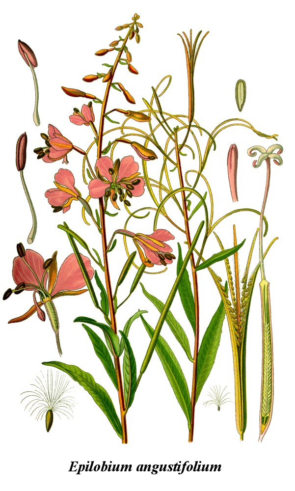

I. Описание
1. Описание и названия
 Описание: Иван-ча́й узколи́стный, Иван-чай, Кипре́й узколистный, или Копорский чай, или Хаменереум узколистный (лат. Chamaenérion angustifolium, или Epilóbium angustifolium) — многолетнее травянистое растение семейства Кипрейные (Onagraceae). Типовой вид рода Иван-чай (Chamaenerion), во многих классификациях включаемого в состав широко принимаемого рода Кипрей (Epilobium).
Описание: Иван-ча́й узколи́стный, Иван-чай, Кипре́й узколистный, или Копорский чай, или Хаменереум узколистный (лат. Chamaenérion angustifolium, или Epilóbium angustifolium) — многолетнее травянистое растение семейства Кипрейные (Onagraceae). Типовой вид рода Иван-чай (Chamaenerion), во многих классификациях включаемого в состав широко принимаемого рода Кипрей (Epilobium).
Названия: Иван-чаем было названо растение Epilobium angustifolium, из которого в России делали напиток, который сравнивали с китайским чаем (см. копорский чай).
«Верба-трава», «ива-трава» — это название возникло из-за схожести листьев с листьями ивы. «Огненная трава», «пожарник» — такое имя дано растению, потому что оно первым заселяет пожарища. «Скрипун и плакун» — при попытке выдернуть траву из земли возникает соответствующий звук. Также называют «дикая конопля» или «дикий лён» за высокие лубяные свойства его стеблей, дающих 15%-й выход волокна. Из этого волокна на Руси вили верёвки и изготавливали ткани. У иван-чая узколистного также есть названия «хлебница» или «мельничник». Высушенные и размолотые корни растения добавлялись в муку и использовались для выпечки хлеба. Добавка эта, помимо содержания витаминов и микроэлементов, экономила или замещала сахар. Помимо хлеба, народные умельцы изготовляли из корней спиртной напиток. Весьма распространённым названием являлся «пуховик». Пух, весьма обильный при цветении, использовался при изготовлении ваты, им набивали подушки и матрасы.
Другие народные названия:
Богородицына трава, Верба трава, Сорочьи глаза, Дятельник, Елушник, Дрема, Дремуха, Боровое зелье, Ива трава, Ивовая трава, Иванов-чай, Иван-чай, Чай-Иван, Иванъ-трава, Ивановская трава, Кипрей, Кипрейник, Кипер, Купрей, Копыл трава, Копорка, Копорский чай. Курильский чай, Дикая конопля, Красный цвет, Краснушка, Коневник, Любиш, Полевая левкония, Дикий лён, Льонок, Маточник, Мельничник, Плакун, Пуховник, Пущник, Пустодом, Рак, Ревенка, Синовод, Скрипун, Скрыпун, Скрыпень, Скрыпник, Скрипен, Лесной Скрыпий, Скрыпей, Скрипица, Скрипт, Скрипен, Скрипел, Хрыпняк, Хрепяльник, Хрипняк, Спрыг, Смолка, Степник, Дикая Фиалка, Хлебница, Хмызок, Шелковица, Щелкунец, Яровник или Еровник, Балник, Бурьян, Полевые васильки, Виноход, Ненадычка, Шалфей полевой, Ницалоза, Петушковы яблоки, Донник, Сапожник, Пырей.
В современном китайском языке иван-чай имеет очень образное название: «лю лань» (кит. упр. 柳兰, пиньинь liǔlán), что в буквальном переводе означает «ивовая орхидея».
2. Ботаническое описание
 Многолетнее травянистое растение высотой 50—150 (до 200) см. Корневище толстое, ползучее; на вертикальных и горизонтальных корнях развиваются многочисленные дополнительные почки, которые способствуют быстрому вегетативному размножению. Стебель прямостоячий, округлый, простой, голый, густо облиственный. Листья очерёдные, сидячие, иногда с очень короткими черешками, простые, линейно-ланцетные, заострённые, к основанию клиновидно суженные, иногда почти округлые, 4—12 см длиной, 0,7—2 см шириной, по краю мелко железисто-зубчатые или цельные, сверху темно-зелёные, блестящие, снизу сизо-зелёные, пурпурно-красные, иногда бледно-розовые. Цветки с двойным околоцветником, четырёхчленные, обоеполые, диаметром 2,5—3 см, собраны в редкую верхушечную кисть длиной 10—45 см, бледно-розовые, реже белые. Нектарное кольцо расположено вокруг столбика. Цветёт с начала второй половины лета в течение 30—35 дней. Пыльцевые зёрна трёхпоровые, шаровидной формы. Диаметр 4,8—8,4 мкм. В очертании с полюса округло-треугольные, с ярко выраженными порами, с экватора — округлые. Поры округлые, внутриободковые, 17—20 мкм в диаметре. Мембрана пор бугорчатая. Ширина мезопориума 61,2—68,8 мкм. Экзина в центре мезопорума имеет толщину 1,6—1,8 мкм, около пор утолщена до 7 мкм. Скульптура тонкая, сглаженно-бугорчатая. Цвет пыльцы жёлто-зелёный. Плод — пушистая, немного изогнутая коробочка, напоминающая стручок. Семена голые, продолговатые, наверху с длинными, тонкими, белыми волосками. Легко разлетаются на большие расстояния. Масса 1000 семян 0,10—0,12 грамм. Плоды созревают в августе—сентябре.
3. Распространение
Произрастает по всему Северному полушарию. На территории России преимущественно в нечернозёмной полосе. Огромные площади занимает на Урале и Алтае. Растёт на хорошо освещёных местах: опушки смешанных и хвойных лесов, осушенные болота (торфяники), железнодорожные насыпи, берега карьеров, оврагов и лесных ручьёв. Характерен для мест лесных вырубок и гарей, где растёт до 10 лет, затем вытесняется малиной и таволгой.
4. Экология
Произрастает на почвах различного механического состава: от песков до тяжёлых суглинков. Мирится с различным содержанием влаги в почве, за исключением очень сухих и сырых почв. Отрицательно реагирует на близкое залегание грунтовых вод и длительное заливание полыми водами. Растёт на почвах с различной кислотностью — pH 4,0—7,0. Наиболее обильно разрастается на умеренно влажных супесчаных и суглинистых незадернелых почвах, которые богаты нитратами. Экспериментально доказано, что кипрей узколистный усваивает азот только в форме нитратов, и не усваивает азот в аммиачной форме. Поэтому именно на лесных гарях и вырубках создаются условия для его хорошего произрастания. Предпочитает открытые, не затенённые места. При этом достаточно теневынослив и произрастает в разреженных лесах, но в этих условиях угнетается и иногда не плодоносит. Достаточно зимостоек и морозоустойчив. Хорошо отзывается на внесение удобрений
5. Химический состав
В молодых листьях и корневищах иван-чая узколистного содержится от 10 до 20 % дубильных веществ. В листьях — до 15 % слизи. В нём также обнаружено большое количество растительных волокон (целлюлозы), лектины, витамин С (от 90 до 588 мг% (то есть на 100 г сырой травы) — по крайней мере в 5—6 раз больше, чем в лимонах), сахара, органические кислоты, пектин, флавоноиды и следы алкалоидов. Среди микроэлементов, обнаруженных в растении, следует упомянуть о довольно большой концентрации железа, меди и марганца. В 100 г зелёной массы иван-чая узколистного содержится 23 мг железа, 1,3 мг никеля, 16 мг марганца, 1,3 мг титана, 0,44 мг молибдена и 6 мг бора. До бутонизации в надземной части растения имеется до 20 % белка, соли фосфора, кальция, кобальта. Кроме того, обнаружены калий, кальций, литий и др. элементы. В корнях концентрация танина может достигать 20 мг% (в листьях его около 10 мг%). Кофеина в иван-чае узколистном не содержится.